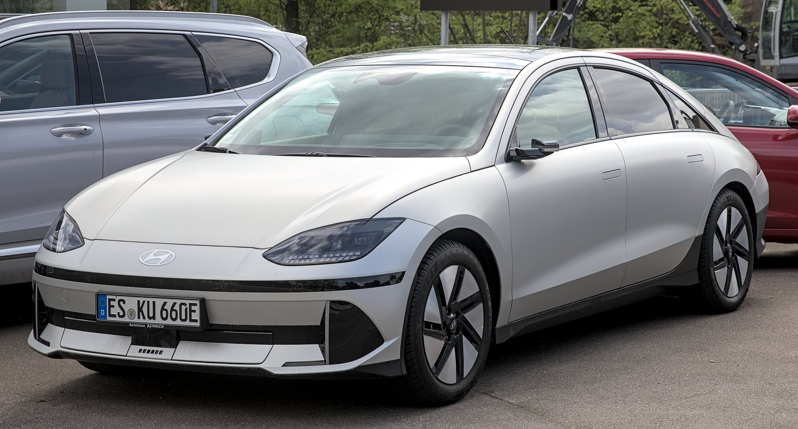

▲ 완성차 업체들의 구독 서비스가 전기차를 중심으로 빠르게 확대되고 있다 ⓒ Striker9498, Wikimedia Commons (CC BY-SA 3.0)
"차를 사는 대신 빌려 탄다." 한때 낯설게 느껴지던 이 방식이 이제는 자연스러운 선택지가 됐습니다. 목돈을 들여 차량을 구매하는 대신, 월 정액 요금으로 원하는 차를 필요한 기간만큼 이용하는 구독·장기렌트 서비스가 완성차 업체와 모빌리티 기업 양쪽에서 동시에 몸집을 키우고 있습니다.
국내 렌터카 시장은 연평균 18%씩 성장하고 있습니다. 차량을 '소유'가 아닌 '이용'의 대상으로 보는 인식 변화가 확산되면서, 신차 장기렌트에 대한 거부감이 눈에 띄게 줄었다는 분석이 나옵니다.
1. 왜 지금 구독·장기렌트인가 — 소유에서 이용으로
차량 가격 상승과 금리 부담이 맞물리면서, 목돈을 들여 차를 사는 대신 매달 일정액만 내고 이용하는 방식에 대한 거부감이 크게 낮아졌습니다. 국내 렌터카 시장이 연평균 18%씩 성장하고 있다는 점이 이런 흐름을 뒷받침합니다.
기아의 구독 서비스 '기아 플렉스'는 2019년 출시 당시 100대 규모로 시작해 2022년 500대, 최근에는 1,000대까지 운영 규모를 늘렸고, 매년 43%씩 성장하고 있습니다. 다만 완성차 업체 전체 매출 규모에 비하면 아직 구독 서비스가 차지하는 비중은 크지 않다는 평가도 있어, 성장세와 별개로 아직은 '주류'보다는 '대안'에 가까운 단계라는 시각도 존재합니다.
2. 완성차 업체들의 구독 서비스 확대 — 현대 셀렉션 '360일 플랜'

▲ 아이오닉 6는 360일 플랜 적용 시 30일 단기 구독 대비 월 최대 14만 원 저렴해진다 ⓒ Alexander-93, Wikimedia Commons (CC BY-SA 4.0)
현대차는 2026년 6월 15일 전기차 전용 장기 구독 상품 '360일 플랜'을 출시했습니다. 기존 '현대 제네시스 셀렉션' 서비스에 장기 이용 할인을 더한 상품으로, 위약금과 약정기간, 선납금 없이 최대 360일간 차량을 이용할 수 있습니다. 대상 차종은 아이오닉 5, 아이오닉 6, 코나 일렉트릭, 아이오닉 5 N 4종입니다.
요금은 30일 단기 구독 대비 아이오닉 5·6가 월 최대 14만 원, 코나 일렉트릭이 월 최대 5만 원 저렴해지며, 고성능 모델인 아이오닉 5 N은 월 30만 원 할인이 적용돼 월 139만 원에 이용할 수 있습니다. 마이현대 앱을 통한 원격 제어·디지털 키, 운전 데이터 기반 맞춤 리포트, EV 충전 솔루션까지 함께 제공됩니다.
3. 장기렌트 vs 리스 vs 구독, 무엇이 다른가

▲ 그랜저처럼 장기렌트로 즐겨 찾는 인기 세단은 세금·보험·정비를 렌트사가 전담해 유지관리 부담이 적다 ⓒ 현대자동차 공식
세 방식은 비슷해 보이지만 구조가 다릅니다. 장기렌트는 렌트회사가 차량을 대신 등록·관리하며, 세금·보험·정비 등 대부분의 업무를 렌트사가 처리하고 이용자는 매달 정해진 렌트료만 냅니다. 리스는 차량을 구입하지 않고 사용료만 리스회사에 지불하는 방식으로, 운용리스는 계약 만기 시 반납이 가능합니다.
구독 서비스는 이 둘의 성격을 합친 형태에 가깝습니다. 월정액에 세금·보험·정비가 모두 포함되는 렌트의 편의성에, 계약 기간 안에서도 원하는 차종으로 자유롭게 바꿔 탈 수 있는 유연성이 더해집니다. 쏘카의 '퇴출근패스'처럼 독일 완성차 브랜드 차량을 리스 형태로 이용할 수 있는 서비스도 MZ세대 사이에서 호응을 얻고 있습니다.
4. 이런 사람에게 맞는다 — 그리고 따져봐야 할 점

▲ 아반떼급 준중형차는 구독·장기렌트 모두에서 사회초년생이 가장 많이 찾는 체급이다
구독·장기렌트는 초기 목돈 부담 없이 예측 가능한 지출로 차량을 이용하고 싶은 사람, 혹은 몇 년마다 새 차로 바꿔 타고 싶은 사람에게 특히 유리합니다. 비용이 투명하게 정액화돼 있다는 점도 재정 관리 측면에서 매력적인 요소로 꼽힙니다.
다만 장기적으로 같은 차를 오래 탈 계획이라면 총비용 측면에서 할부 구매가 더 저렴할 수 있다는 점은 따져봐야 합니다. 서비스마다 주행거리 제한, 중도 해지 조건, 사고 시 자기부담금 규정이 다르므로 계약 전 약관을 꼼꼼히 비교하는 것이 좋습니다.